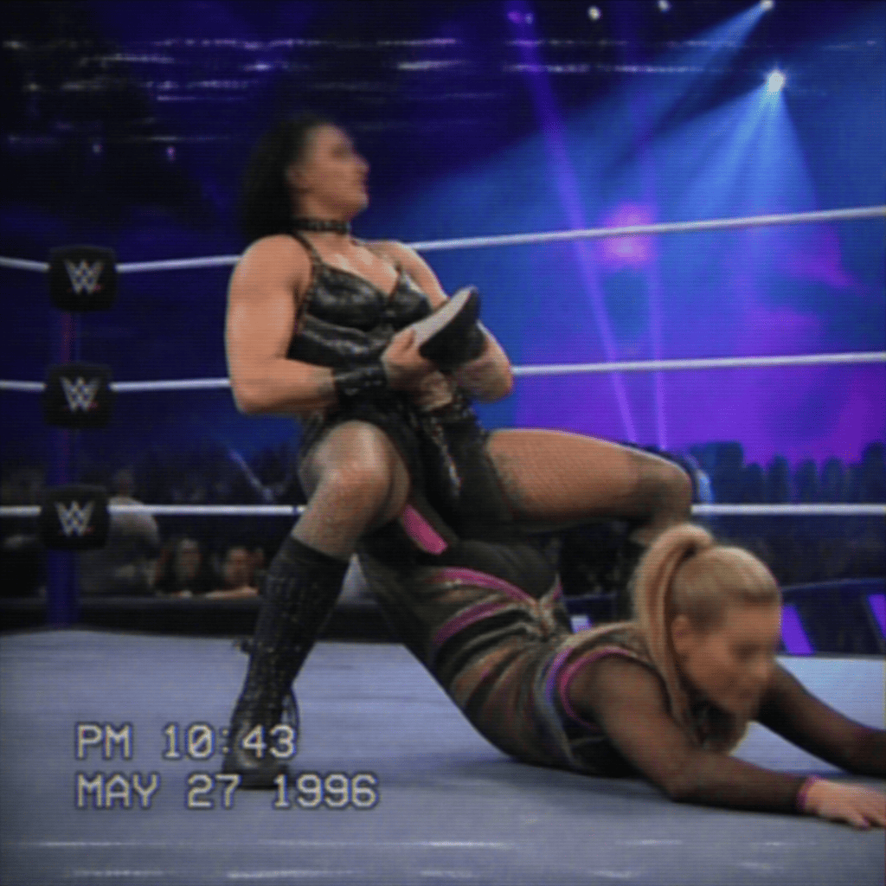

2026/09/23(火)
アベマ・試合結果速報！
○ウィル・オスプレイ (12分34秒 オスカッター) Mini Vikingo●
○ビアンカ・ベレア (19分45秒 KOD) ジェイド・カーギル●
○NARAKU (15分27秒 パワーボム) キット・ウィルソン●
○ティファニー・ストラットン (8分55秒 ストラットナックル) パイパー・ニーヴェン●
○YOH (16分12秒 ストレートガフ) コフィ・キングストン●
○ミチン (10分5秒 ダイビング・フットスタンプ) スカーレット●
○高橋ヒロム (14分48秒 時間差ジャーマン) グレイソン・ウォーラー●
○リア・リプリー (23分21秒 リプリー・スナップ) ナタリア●
○キアナ・ジェームス (11分30秒 実は腕ひしぎ) キアナ・ジェームス●
○鷹木信悟 (18分15秒 トリプルニードロップ) アクシオム●
○飯伏幸太 (20分44秒 みちのくドライバー2) ローガン・ポール●
○永田裕志 (13分29秒 エメラルド・フロー) DOUKI●
○オースティン・セオリー (9分52秒 アトミック・ドロップ) トンガ・ロア●
Thank you for Watching !

「○リア・リプリー (23分21秒 リプリー・スナップ) ナタリア●」